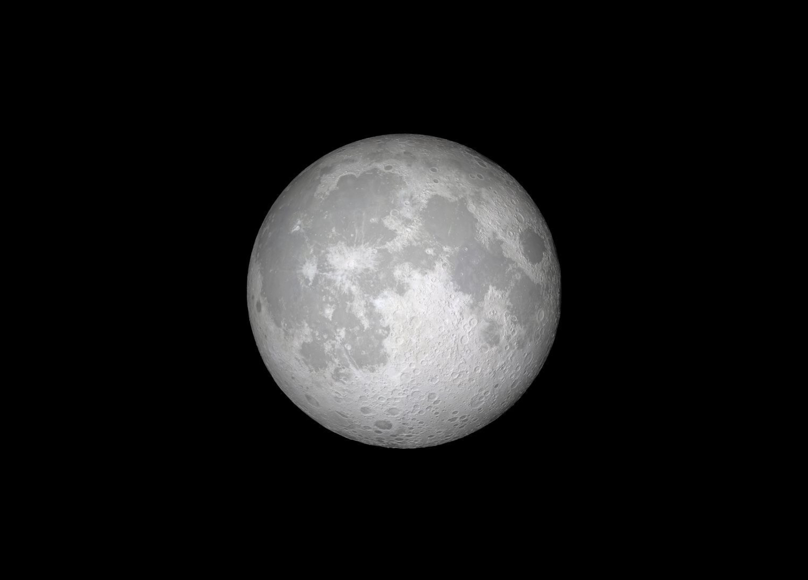
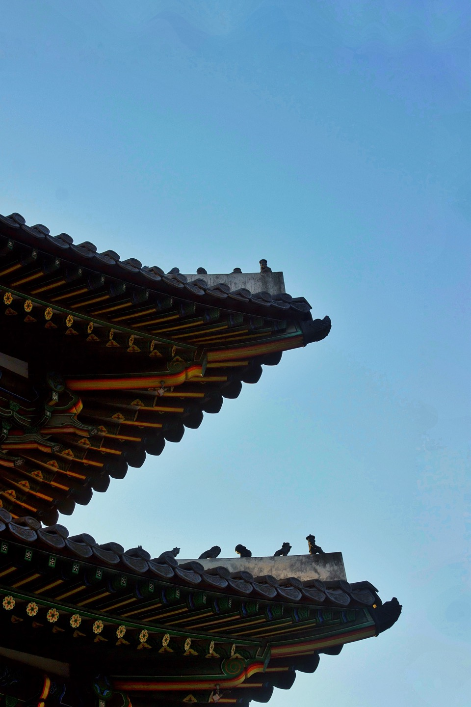
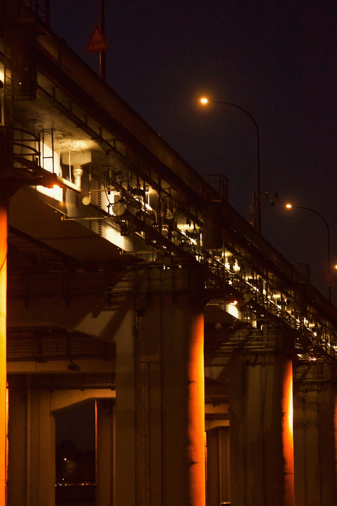

RECENT WORK

Ae, Ai, Blender, Ps / 2224*1597px
음력을 기준으로 매달 15일은 보름달이 뜨는 날입니다. 30일 주기로 보름달은 항상 돌아오지만 매번 그 모습은 매번 다른 느낌을 줍니다. 홀로 하늘을 밝히기도 하고,때로는 구름 뒤에 숨어 그 자취를 감추곤하죠.
그 중 보름달이 유독 차가우리만큼 선명했던 그날의 모습을 담았습니다.
'FULL MOON'

Ae, Ai, Blender, Ps / 2224*1597px
우리나라의 국보 중 하나인 숭례문의 사진입니다. 과거 한 차례의 화재로 인해 크게 손상되었지만 국민들의 노력으로 그 웅장한 모습을 다시 자랑하고 있는 문화재입니다.
'SUNGNYEMUN'
'SUNGNYEMUN'

Ae, Ai, Blender, Ps / 2224*1597px
서울의 강남과 강북을 있는 다리들 사진 시리즈 첫번째, 반포대교입니디. 서울의 여러 대교들의 다양한 모습을 담기 위해 진행 중인 프로젝트로 특이하게 교량 하단에 보행로가 있는 것이 특징인 대교입니다.
'BANPODAEGYO'
'BANPODAEGYO'